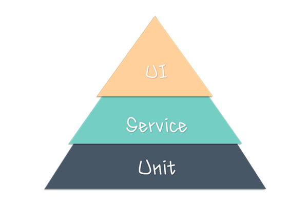
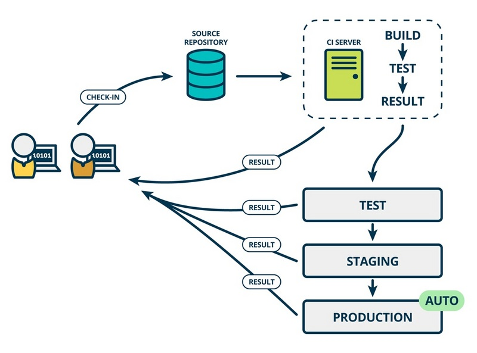
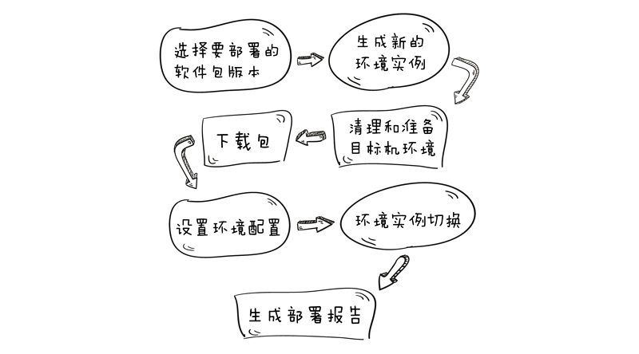

var cluster = require('cluster');
if (cluster.isMaster) {
for (var i = 0; i < 10; i++) {
cluster.fork();
}
} else {
require('./app.js').listen(PORT);
}
https://nodejs.org/api/cluster.html
dd
相同的单台扩展原理 + nginx这样的load balancer
# nginx
upstream appfarm {
listen ...
server x.x.x.1
server x.x.x.2
server x.x.x.3
}
Nginx Load Balancer and Reverse Proxy for Node.js Applications On Digital Ocean
Session数据存储会用Redis这样兼具效率和持久化的方案。
如果是大量繁重的后台任务，比如后台发送邮件或者日志处理等，前端实时性要求较低，通常引入队列，用类似zmq。原理是前端进程不立即处理这些任务，而是发一个消息到一个队列，让队列去分发管理这些任务的执行，模式可以很灵活，请看zero-mq-with-nodejs，书上都有：Deploying Node.js
Node.js the Right Way: Practical, Server-Side JavaScript That Scales
除了标准的Cluster之外，如果想利用几十上百的内核，数以百G的内存，Transactional Memory 可以看看Extended Memory Semantics (EMS)
测试金字塔，Unit 代表单元测试，Service 代表服务集成测试，UI 代表页面级的功能测试。

单元测试覆盖率检测有现成的第三方工具，比如 code climate 、 Coveralls 等等，针对不同的语言也有还有一些定制化的检测工具， 比如前端常用的 Eslint , Python 常用的PEP8 等等。
在做好上面两层的测试覆盖之后，最顶端的是 UI 层的自动化测试。目前，UI 层的自动化覆盖正在逐渐转变为页面展示逻辑及界面前端与服务展现层交互的集成验证。UI层自动化做的方式很多，根据不同的系统，不同的架构可能会用到不同的框架或者工具，比较主流的有QTP，Robot Framework、watir、selenium 等。
怎么选择合适的工具？每个测试工具都有它的优缺点，每个被测试的项目也有自己本身的特点。比如，项目是用什么语言编写的，C, C++, Java, PHP , Python or C#? 项目是什么类型，Desktop , Web or Mobile Application? 很难说一种工具就可以搞定所有或者大部分的项目，也很难说一个项目就能单纯的靠一种工具来搞定。
UI 层是直接面向用户的，需要测试人员放入更多的时间和精力。如今的互联网公司大多需求变化大而快，迭代频繁，所以很多团队做 UI 自动化测试投入较大精力，却迟迟见不到效果，自动化测试人员每天奔命于维护脚本，追赶进度。有 2 点 UI层自动化覆盖的原则非常有必要提下：
能在底层做自动化覆盖，就尽量不在UI层做自动化覆盖；
只做最核心功能的自动化覆盖，脚本可维护性尽可能提高。
综上所述，分层自动化测试侧重不同，效果不尽然完美的，而最快速高效发现 bug 的方法是将自动化测试包含到构建过程中。谨慎周全的自动化测试可以进一步保证持续部署的稳定与安全，提高持续部署的成功率。

持续部署（continuous deployment）是通过自动化的构建、测试和部署循环来快速交付高质量的产品。某种程度上代表了一个开发团队工程化的程度，毕竟快速运转的互联网公司人力成本会高于机器，投资机器优化开发流程化相对也提高了人的效率，让 engineering productivity 最大化。

面对众多的 CI 工具，我们将其分为 Hosted CI 和 Self Hosted CI：
Self HostedCI 指的是将软件部署在公司的机房或内网中，需要提供多台服务器来完成 CI 系统的运转，同时需要对不同机器之间进行环境配置。主流工具有Jenkins，其他受欢迎的工具比如 Baboom 及 TeamCity 等。
Hosted CI 指的是由 SaaS 型的 CI 服务，全程在线进行构建配置，不需要考虑装机器，装软件，环境搭建等成本。常见的有 CircleCI，Codeship 和 TravisCI 等。
我们对比一下这两种 CI 服务：
Self Hosted CI 对构建环境有完全的控制权，能够实现完全定制。但需要搭建环境和配置、维护成本高，需要买专门的机器，花费人力物力且更新迁移风险高；
Hosted CI 无需额外机器，几分钟就可以用起来。可以根据你的需要动态调度资源。省时，省心，省力。